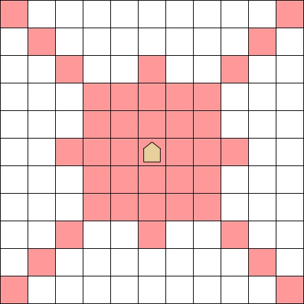

There is an infinite two-dimensional grid, and we have a piece called Super Ryuma at square (r1,c1). (Ryu means dragon and Ma means horse.) In one move, the piece can go to one of the squares shown below:

More formally, when Super Ryuma is at square (a,b), it can go to square (c,d) such that at least one of the following holds:
a+b=c+d
a−b=c−d
∣a−c∣+∣b−d∣≤3
Find the minimum number of moves needed for the piece to reach (r2,c2) from (r1,c1).
Constraints
All values in input are integers.
1≤r1,c1,r2,c2≤109
Input
Input is given from Standard Input in the following format:
r1r2c1c2
Output
Print the minimum number of moves needed for Super Ryuma to reach (r2,c2) from (r1,c1).
Sample Input 1
1 2
1 1 5 6
Sample Output 1
1
2
We need two moves - for example, (1,1)→(5,5)→(5,6).
Sample Input 2
1 2
1 1 1 200001
Sample Output 2
1
2
We need two moves - for example, (1,1)→(100001,100001)→(1,200001).
Sample Input 3
1 2
2 3 998244353 998244853
Sample Output 3
1
3
We need three moves - for example, (2,3)→(3,3)→(−247,253)→(998244353,998244853).
/* * @Author: Tifa * @LastEditTime: 2021-02-02 12:05:57 * @Description: ABC184 C */ #include<bits/stdc++.h> usingnamespacestd; intmain(){ #define _END(ans) \ { \ cout << ans; \ return0; \ } int a, b, c, d; cin >> a >> b >> c >> d; if (a == c && b == d) _END(0); if (abs(a - c) + abs(b - d) <= 3 || a + b == c + d || a - b == c - d) _END(1); if ((a + b + c + d) % 2 == 0) _END(2); for (int i = -3, a1, b1; i <= 3; ++i) for (int j = -3; j <= 3; ++j) { if (i + j > 3) continue; a1 = a + i; b1 = b + j; if (abs(a1 - c) + abs(b1 - d) <= 3 || a1 + b1 == c + d || a1 - b1 == c - d) _END(2); } _END(3); }
D - increment of coins
原始题面
Problem Statement
We have a bag containing A gold coins, B silver coins, and C bronze coins.
Until the bag contains 100 coins of the same color, we will repeat the following operation:
Operation: Randomly take out one coin from the bag. (Every coin has an equal probability of being chosen.) Then, put back into the bag two coins of the same kind as the removed coin.
Find the expected value of the number of times the operation is done.
Constraints
0≤A,B,C≤99
A+B+C≥1
Input
Input is given from Standard Input in the following format:
ABC
Output
Print the expected value of the number of times the operation is done. Your output will be accepted if its absolute or relative error from the correct value is at most 10−6.
Sample Input 1
1
99 99 99
Sample Output 1
1
1.000000000
No matter what coin we take out in the first operation, the bag will contain 100 coins of that kind.
Sample Input 2
1
98 99 99
Sample Output 2
1
1.331081081
We will do the second operation only if we take out a gold coin in the first operation. Thus, the expected number of operations is 2×98+99+9998+1×98+99+9999+1×98+99+9999=1.331081081...
/* * @Author: Tifa * @LastEditTime: 2021-02-02 12:05:57 * @Description: ABC184 D */ #include<bits/stdc++.h> usingnamespacestd; constint N = 105; double dp[N][N][N]; doublef(int a, int b, int c){ if (a == 100 || b == 100 || c == 100) return dp[a][b][c] = 0; if (dp[a][b][c] >= 0) return dp[a][b][c]; return dp[a][b][c] = 1.0 * a / (a + b + c) * f(a + 1, b, c) + 1.0 * b / (a + b + c) * f(a, b + 1, c) + 1.0 * c / (a + b + c) * f(a, b, c + 1) + 1; } intmain(){ int a, b, c; cin >> a >> b >> c; for (int i = a; i < N; ++i) for (int j = b; j < N; ++j) for (int k = c; k < N; ++k) dp[i][j][k] = -1; printf("%.9lf", f(a, b, c)); return0; }
E - Third Avenue
原始题面
Problem Statement
There is a town represented as a two-dimensional grid with H horizontal rows and W vertical columns.
A character ai,j describes the square at the i-th row from the top and j-th column from the left. Here, ai,j is one of the following: S, G, ., #, a, …, and z.
# represents a square that cannot be entered, and a, …, z represent squares with teleporters.
Takahashi is initially at the square represented as S. In each second, he will make one of the following moves:
Go to a non-# square that is horizontally or vertically adjacent to his current position.
Choose a square with the same character as that of his current position, and teleport to that square. He can only use this move when he is at a square represented as a, …, or z.
Find the shortest time Takahashi needs to reach the square represented as G from the one represented as S. If the destination is unreachable, report -1 instead.
Constraints
1≤H,W≤2000
ai,j is S, G, ., #, or a lowercase English letter.
There is exactly one square represented as S and one square represented as G.
Input
Input is given from Standard Input in the following format:
Ha1,1⋮aH,1W......a1,WaH,W
Output
Print the shortest time Takahashi needs to reach the square represented as G from the one represented as S. If the destination is unreachable from the initial position, print -1 instead.
Sample Input 1
1 2 3
2 5 S.b.b a.a.G
Sample Output 1
1
4
Let (i,j) denote the square at the i-th row from the top and j-th column from the left.
Initially, Takahashi is at (1,1). One way to reach (2,5) in four seconds is:
go from (1,1) to (2,1)
teleport from (2,1) to (2,3), which is also an a square;
intmain(){ scanf("%d%d\n", &h, &w); for (int i = 1; i <= h; ++i) scanf("%s", maps[i] + 1); queue<Point> q; Point p_end; list<Point> portals[30]; for (int i = 1; i <= h; ++i) for (int j = 1; j <= w; ++j) { if (maps[i][j] == 'S') { q.push(Point(i, j)); continue; } if (maps[i][j] == 'G') { p_end = Point(i, j); continue; } if (islower(maps[i][j])) { portals[maps[i][j] - 'a'].push_back(Point(i, j)); continue; } } while (!q.empty()) { Point now(q.front()); q.pop(); for (const Point& i : dir) { Point _(now + i); if (!isvalid(_)) continue; if (_.get_ans(ans)) continue; if (_ == p_end) { cout << now.get_ans(ans) + 1; return0; } _.get_ans(ans) = now.get_ans(ans) + 1; q.push(_); } if (islower(now.get_map(maps))) { list<Point>& now_portal = portals[now.get_map(maps) - 'a']; bool f = 1; for (auto i = now_portal.begin(); i != now_portal.end(); f ? ++i : i) { if (*i == now) { i = now_portal.erase(i); f = 0; continue; } f = 1; Point _(*i); if (!isvalid(_)) continue; if (_.get_ans(ans)) continue; if (_ == p_end) { cout << now.get_ans(ans) + 1; return0; } i = now_portal.erase(i); f = 0; _.get_ans(ans) = now.get_ans(ans) + 1; q.push(_); } } } cout << -1; }
F - Programming Contest
原始题面
Problem Statement
Takahashi will participate in a programming contest, which lasts for T minutes and presents N problems.
With his extrasensory perception, he already knows that it will take Ai minutes to solve the i-th problem.
He will choose zero or more problems to solve from the N problems so that it takes him no longer than T minutes in total to solve them.
Find the longest possible time it takes him to solve his choice of problems.
Constraints
All values in input are integers.
1≤N≤40
1≤T≤109
1≤Ai≤109
Input
Input is given from Standard Input in the following format:
NA1T...AN
Output
Print the answer as an integer.
Sample Input 1
1 2
5 17 2 3 5 7 11
Sample Output 1
1
17
If he chooses the 1-st, 2-nd, 3-rd, and 4-th problems, it takes him 2+3+5+7=17 minutes in total to solve them, which is the longest possible time not exceeding T=17 minutes.
/* * @Author: Tifa * @LastEditTime: 2021-02-02 12:05:57 * @Description: ABC184 F */ #include<bits/stdc++.h> usingnamespacestd; using i64 = longlong;
constint N = 40, M = (1 << (N / 2)), OFS = 5; int a[N + OFS]; i64 b[M + OFS];
intmain(){ int n, t; cin >> n >> t; for (int i = 0; i < n; ++i) cin >> a[i]; int len = n / 2, len_b = 0; i64 ans = 0; for (int i = 0; i < (1 << len); ++i) { i64 sum = 0; for (int j = 0; j < len; ++j) if ((i >> j) & 1) sum += a[j]; if (sum > t) continue; b[len_b++] = sum; ans = max(ans, sum); } sort(b, b + len_b); for (int i = 0; i < (1 << (n - len)); ++i) { i64 sum = 0; for (int j = 0; j < n - len; ++j) if ((i >> j) & 1) sum += a[len + j]; if (sum > t) continue; ans = max(ans, sum); int pos = upper_bound(b, b + len_b, t - sum) - b - 1; if (pos) ans = max(ans, sum + b[pos]); } cout << ans; return0; }